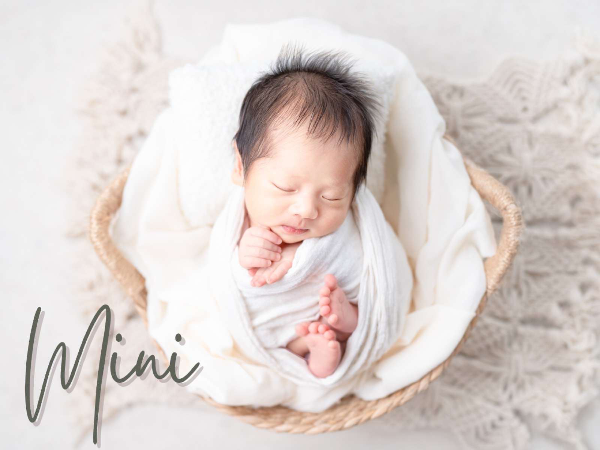
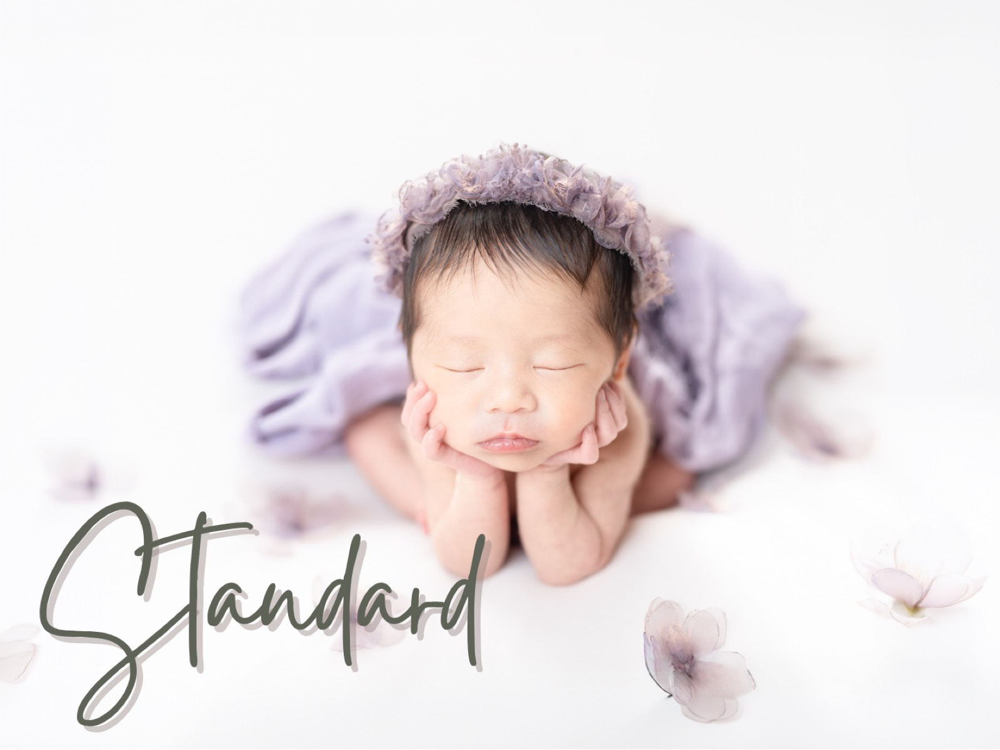
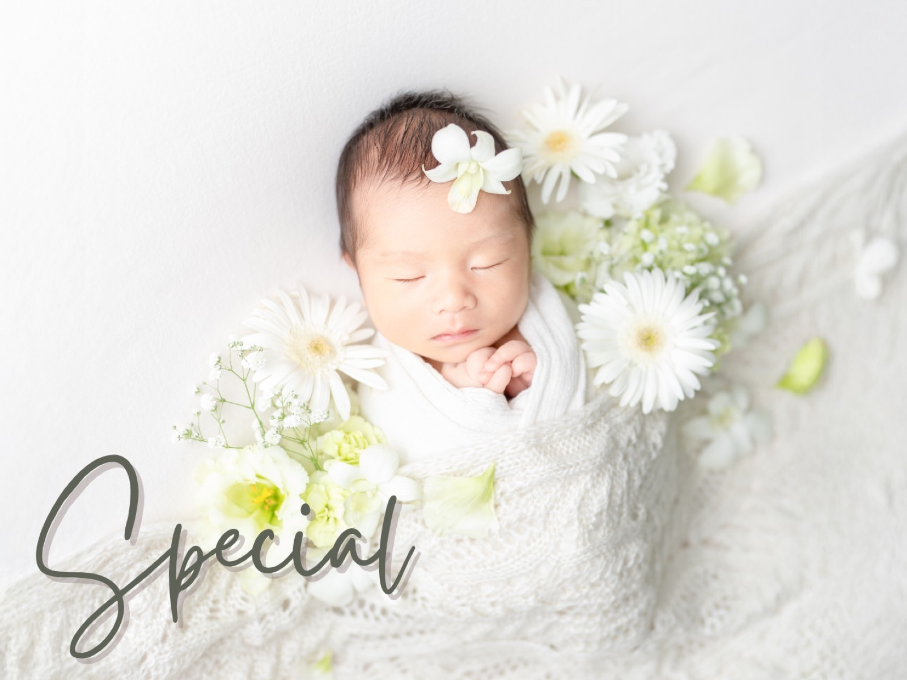
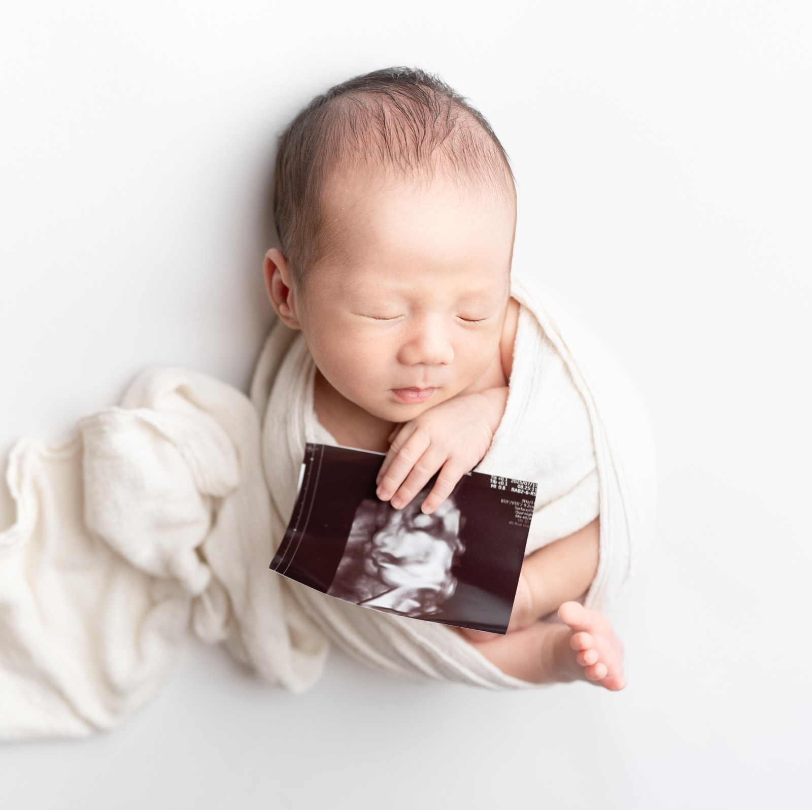
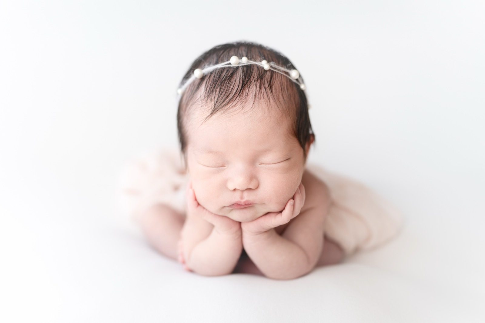
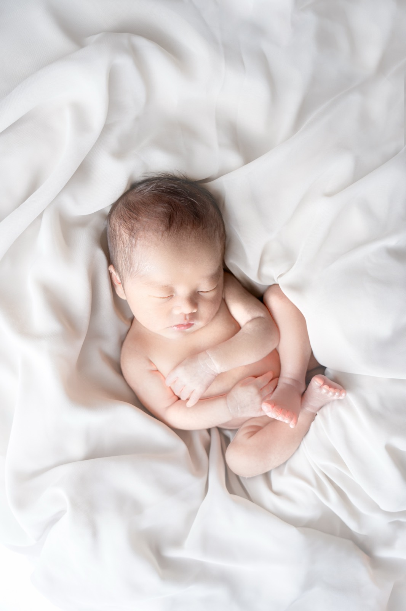
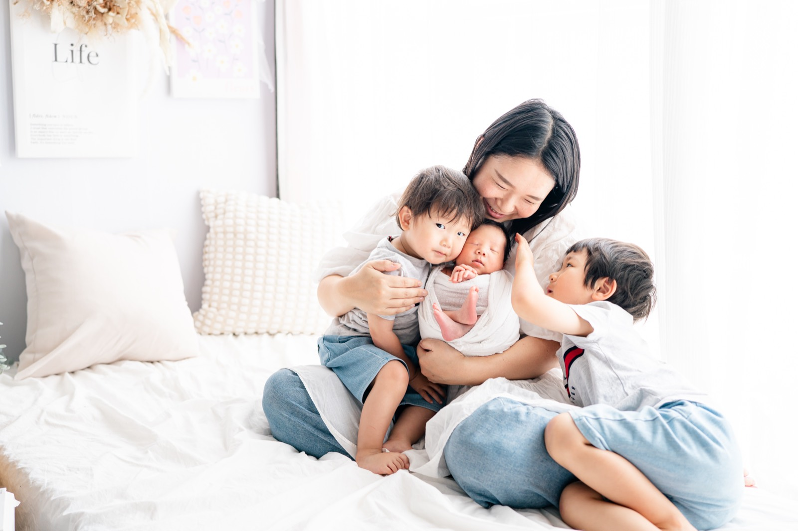

ニューボーンフォト
生まれてすぐの小さな尊い姿を
ご自宅へ伺って撮影します
料金は「プラン料金・オプション料金・交通費」の
合計となります
プラン料金

Mini
¥35,000
新生児期の記憶をシンプルに残したい方に
- 2ポーズ（おくるみのみ）
- 頬杖・うつ伏せ・はだかんぼ、家族やきょうだい撮影は不可
- 所要時間 1.5〜2時間程度
- 撮影データ10枚をお渡し

Standard
¥42,000
“撮りたい”も“残したい”もちゃんと叶えるプラン
- 3ポーズ＋手足などのパーツ
- 所要時間 2〜3時間程度
- 撮影データ20枚をお渡し
- A4フォトパネル付き（他商品をご希望の場合、差額で購入可能）
撮影当日にフォトグッズを¥15,000以上追加購入で¥3,000 OFF

Special
¥66,000
後悔したくない方へ。家族の今を、
いちばん深く残せるプラン
- 5ポーズ＋手足などのパーツ
- 所要時間 3〜3.5時間程度
- 撮影データ40枚をお渡し
- A4パネル・2面アルバムをプレゼント（他商品をご希望の場合、差額で購入可能）
- 撮影で使える生花プレゼント（5,000円相当）
撮影当日にフォトグッズを¥15,000以上追加購入で¥5,000 OFF
オプション料金
- 兄弟・姉妹
- ¥3,000
- 土日祝・年末年始
- ¥3,000
- プチ生花（1〜2種類の生花を使用）
- ¥3,000
- 生花（5〜6種類の生花をたっぷり使用）
- ¥5,000
- 双子
- ¥10,000
- 5カット追加
- ¥5,000
スペシャルプランは、プチ生花・生花がプラン内に含まれます
ポーズ追加などは直接ご相談ください
Discount
- 個別撮影でリピートの方
- ¥3,000 OFF
- ニューボーンフォトと合わせてお宮参りをご予約（お宮参り時に適用）
- ¥3,000 OFF
交通費
西鉄久留米駅からの計算です。高速料金は別途必要です
| 〜5km | 無料 |
| 〜10km | ¥1,000 |
| 〜20km | ¥2,000 |
| 〜30km | ¥3,000 |
| 〜40km | ¥4,000 |
| 〜50km | ¥5,000 |
| 50km〜 | 10kmごとに +¥1,500 |
撮影場所について
ニューボーンフォトは基本的にご自宅へお伺いします。4畳から5畳のスペースがあれば、窓がなくても撮影可能です。大きなスペースは必要ありません。
ニューボーンフォトの予約について
妊娠5ヶ月頃からご予約いただけます。撮影日は出産から2週間以内を目安に行い、正式な日程は産後に調整させていただきます。
撮影時の授乳について
撮影中に赤ちゃんがぐっすり眠ってくれると、撮影がスムーズに進みます。当日は、次の2点にご協力いただけると助かります。
- 撮影の1時間ほど前からは、赤ちゃんが眠っている場合、遊んだりしてなるべく起こしておいてください。
- 当日カメラマンが到着し、撮影準備をしている間に授乳をお願いします。いつもより少し多めに、ミルクの場合は20ml程度を目安に飲ませてあげてください。
お子さまやご家族の生活リズムもあると思いますので、無理のない範囲で大丈夫です。ご協力よろしくお願いいたします。
ポーズ一覧
ミニプランの方は①〜④から、スタンダード・スペシャルプランの方は全てからお選びいただけます
赤ちゃんの状態を最優先に、無理のない範囲で撮影します

①おくるみ：カゴ

②おくるみ：布

③ミノムシ

④おふとん

⑤頬杖

⑥あごのせ

⑦全身

⑧きょうだい

⑨家族
よくある質問
いつ予約すればいいですか?
妊娠5ヶ月頃からご予約いただけます。出産予定日をもとに仮予約を承り、産後に正式な日程を調整します。撮影日は、出産から2週間以内を目安に行います。
赤ちゃんが泣いたらどうなりますか?
授乳やおむつ替えの時間を取りながら、赤ちゃんのペースに合わせて進めます。無理に撮影を続けることはありません。
自宅が狭くても撮影できますか?
4畳から5畳のスペースがあれば撮影できます。自然光の入る窓際などを使いますが、窓がなくても撮影可能です。
上の子も家族写真に写れますか?
プランによって撮影可能です。上のお子さんの年齢やご機嫌に合わせて、無理のない形で進めます。
日程変更はできますか?
赤ちゃんとママの体調を優先して調整しています。体調不良などの場合は早めにご相談ください。
撮影までの流れ
お問い合わせ
希望日・撮影内容をお知らせください
日程調整
ご家族のご予定に合わせて調整します
撮影
ご自宅・ご希望の場所で撮影します
納品
編集後、オンラインでデータをお渡しします。
フォトグッズをご注文の方は、納品したデータの中から商品と写真をお選びいただき発注します。データ納品からおおよそ1〜2ヶ月以内に商品をお届けします。